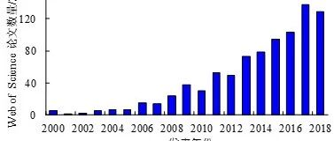

综述论文：我国工程结构防连续倒塌研究：回顾与展望
本文是《建筑结构》期刊纪念建国70周年的约稿论文。 国内很多学者在连续倒塌领域做了很多出色的工作， 但由于本文准备时间比较仓促，很多优秀的工作未能在本文中涉及，恳请批评海涵。
我国工程结构防连续倒塌研究:回顾与展望.建筑结构,2019,49(19):102-112+135
全文下载：
http://www.buildingstructure.cn/UploadFiles/PDF/2019/19/JCJG201919012.PDF
或参见文末链接
连续倒塌研究发展
工程结构在偶然极端荷载（如火灾、撞击、爆炸等）的作用下可能会由于局部破坏而引起整体结构的连续倒塌，导致人民生命和财产损失。在我国，结构的连续倒塌相关研究也受到越来越多的关注，在诸多专家学者的共同努力下，我国在结构连续倒塌试验、数值、理论研究及工程实践等方面取得了诸多代表性的成果，本文将对近年来我国的工程结构防连续倒塌研究工作进行回顾与展望。

Q：那什么是结构连续倒塌呢？
A：连续倒塌是指结构在发生局部破坏后，“由初始的局部破坏，从构件到构件发展，最终导致一部分结构倒塌或整个结构倒塌”

结构连续倒塌过程（图片来自网络）
我国连续倒塌研究现状
2000年后结构的连续倒塌相关论文呈快速增长趋势，反映了该领域已经成为土木工程学科的前沿。本文的综述主要围绕我国结构防连续倒塌设计方法、试验研究、数值模拟、理论发展及工程实践等方面展开。


WOS与CNKI连续倒塌相关论文数量
2
结构防连续倒塌设计方法
为了防止工程结构在偶然事件下发生连续倒塌，我国多部规范对此做出了规定，包括：《建筑结构可靠度设计统一标准》，《建筑结构荷载规范》，《混凝土结构设计规范》，《高层建筑混凝土结构技术规程》，《钢结构设计标准》，《组合结构设计规范》等。
此外，我国的第一部专用设计规范《建筑结构抗倒塌设计规范》（CECS 392:2014）也于2015年5月1日起正式施行。目前正在开展规范修编工作。

《建筑结构抗倒塌设计规范》
3
试验研究
结构连续倒塌试验主要基于拆除构件法。按照加载方式，可以分为静力试验（Ren et al., 2016; Qian & Li, 2017）和动力试验（Tian & Su, 2011; Qian & Li, 2013）。试验涉及到的结构类型包括：混凝土结构（Yi et al., 2008; Yu & Tan, 2012），钢结构（Wang et al., 2016; 钟炜辉, 等, 2017），组合结构（Yang et al., 2018；Lu et al., 2019）。
典型混凝土静力试验

梁-楼板子结构连续倒塌静力加载试验（Ren et al., 2016）
4
数值模拟研究
连续倒塌是整体结构系统的大变形力学行为，基于试验可以对局部子结构在临界倒塌大变形下的受力机理进行分析，但是最终研究和设计要采用数值模拟针对整体结构系统展开，以研究结构系统的替代传力路径、结构冗余度等对连续倒塌的影响。典型数值分析模型包括实体单元模型、纤维模型以及引入弹簧单元的简化模型等。
结构连续倒塌分析模型

钢结构实体模型（Wang, et al., 2016）

钢管混凝土纤维模型（王文达, 等, 2014）

组合结构简化模型（Yang et al., 2018）
5
理论研究
在试验研究和数值模拟研究成果的有力支撑下，工程结构防连续倒塌设计理论研究取得了明显的进步，我国学者在连续倒塌抗力计算方法研究、结构不确定性和风险研究以及动力效应研究方面也取得了诸多有代表性的进展。
承载力计算方法
结构防连续倒塌设计需要计算构件在梁机制阶段与悬链线机制阶段的承载力，我国学者针对梁机制阶段的压拱与压膜效应（Yu & Tan, 2014; Lu et al., 2018），悬链线机制阶段的拉悬链线、拉膜效应（Wang & Kang, 2019; Yang & Tan, 2013）所提供的承载力计算方法均开展了大量深入研究。

RC梁集中荷载下的压拱效应（Lu et al., 2018）
风险研究
在连续倒塌分析中，较多的研究集中于确定性分析，而不确定性研究较少。我国学者主要针对参数不确定性分析与结构易损性分析开展了相关工作。包括：研究了不确定性参数对钢筋混凝土框架防连续倒塌能力的影响（Yu et al., 2016; Feng et al., 2019）；填充墙对框架结构的抗倒塌能力的提高（贾明明, 等, 2018）；提出了倒塌率和承载力储备值的结构防连续倒塌性能评价方法（王浩, 等, 2014），等。
动力效应研究
结构连续倒塌实质上是一个动力过程，其动力效应常用动力放大系数来度量。主要研究包括：基于能量方法，建立了RC框架结构及构件在梁机制与悬链线机制下的非线性动力抗力需求与线性静力抗力需求之间的关系（李易, 等, 2011）；基于数值模型的瞬时加载法研究结构发生连续倒塌时的动力效应（钱稼茹 & 胡晓斌, 2008），等。
6
工程结构防连续倒塌实践
重大工程的结构的连续倒塌分析和设计越来越受到业主和设计人员的重视。根据我国《建筑结构抗倒塌设计规范》（CECS 392:2014），目前结构防连续倒塌设计方法主要包括：概念设计法、拉结强度法、拆除构件法（替代路径法）、局部加强法。
目前近年来，重大工程结构的连续倒塌分析设计逐渐增多。对超高层建筑（以卡塔尔某超高层建筑结构（傅学怡, 等, 2008）为代表）及大跨结构（例如成都双流国际机场 T2 航站楼（赵广坡, 等, 2010）和北京新机场航站楼为代表（朱忠义, 等, 2017））开展了结构防连续倒塌设计， 提升了重大工程结构的防连续倒塌能力。

北京新机场连续倒塌分析（朱忠义, 等, 2017）
7
结论与展望
工程结构的防连续倒塌研究可以有效减小或避免由于意外事件所导致的整体结构破坏、人员伤亡及经济损失等。21世纪以来，我国专家学者在工程结构防连续倒塌领域开展诸多卓有成效的研究。
当然，在未来的工程结构防连续倒塌研究中，依然有许多亟待解决的问题，包括但不限于：1）新材料、新结构的连续倒塌破坏机理及设计方法；2）考虑多种灾害作用的结构防连续倒塌设计方法与实践；3）整体结构连续倒塌风险量化及性能评估方法；4）高效、高精度的结构连续倒塌数值模型研发与应用；5）实际工程结构防连续倒塌系统设计流程研究等多个方面。
由于参考文献较多，不便在推送中一一列举，更多相关内容欢迎下载原文。
---End--
相关研究
新论文：抗震&防连续倒塌：一种新型构造措施
长按识别二维码，关注我们的科研动态